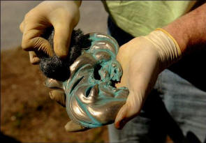
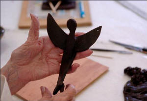
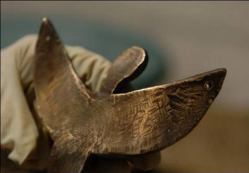

Bronze Age comes
to Englewood Art Center
May 18, 2006
By SHARYN LONSDALE
Read the article below.
|
|
|
Interested?
What: Bronze sculpture lessons at
Englewood Art Center
When: June 3, 10 and 17
Where: Englewood Art Center, 350 S. McCall
Road
Cost: $330 for members, $380 for nonmembers;
includes materials to make at least one
small work in bronze.
Information: 941-474-5548
|
|
 |
For an artist, working in
bronze isn't easy and it isn't cheap. But
while a painting may fade, a ceramic may
break and art glass is subject to all sorts
of mishaps, a bronze sculpture is permanent.
"It will last forever – unless there's a
meltdown or a volcano," said Sean Colson,
who is teaching bronze casting at the
Englewood Art Center.
Colson knows bronze. He practically grew up
in his own Bronze Age. His father, Frank
Colson, is an accomplished artist and
sculptor and established the Colson School
of Art in Sarasota and built the city's
first art foundry. Sean Colson, 45, has been
casting in bronze since he was 14. He also
paints, teaches art and sculpture and runs a
mail-order foundry supply business.
A member of the Englewood Art Center, Colson
wanted to share his passion with others.
However, there were a couple of problems. At
more than $300 for members, the class was on
the expensive side. |
|

 |
And the art
center doesn't have a foundry.
Colson decided to do it anyway. All he
needed was two students and two words --
road trip.
He got his two students.
Natalie Quinlan is a fixture at the art
center.
"I'm constantly taking classes," she said. A
potter and sculptor, she had never worked in
bronze and decided to take a chance.
She and Colson's other student, Conrad
Rosenberg, said they signed on because they
liked the idea of creating something
permanent and wanted a challenge.
They got the challenge. While Rosenberg has
worked with a variety of materials,
including metal, he admitted that molding a
clump of wax into a letter opener was harder
than he thought it would be.
"I find it obstinate," he said. "But I'm a
complete newbie," he said.
While Rosenberg focused on creating the
perfect letter opener, Quinlan, who has some
experience with wax, created three small
abstract sculptures.
Creating a wax model is the first step in
the process.
Once the artist is satisfied with the wax
figure, Colson takes over at the Sarasota
foundry where he coats the pieces in 10
layers of ceramic, and the wax is melted
out, leaving a ceramic shell. He then pours
molten bronze into the shell. When it cools,
the shell is broken revealing the sculpture
inside.
The big risk at this point is a miscast when
the metal is poured, the hot metal breaking
the mold. But, said Colson, the smaller the
piece, the smaller the risk, which is why he
has the students work on pieces that
that will
require less than five pounds of metal.
When the students get their piece back
they sand it and choose a patina to
finish it.
The entire process takes the student 18
to 24 hours, and, Colson said, he puts
in a lot of extra time.
"We come here and play with the wax and
he does all the tedious tasks," said
Rosenberg.
Colson said that he hopes to eliminate
the need for a trip to Sarasota by
building a bronze casting set-up at the
Englewood Art Center. He said they would
do the wax and ceramic shell work inside
and cast the bronze outside. He said the
cost of the set-up would be $700 or
less, and that he has the support of the
center to start building in three to six
months.
"We're moving ahead," he said
Rosenberg said he was pleased with his
letter opener, which came out a bit
sharper and more menacing than he
imagined.
"It's going to work -- too well," he
joked.
Quinlan was thrilled with her pieces and
said she plans to put at least two "in
very conspicuous places." She said she
hopes Colson does build a bronze casting
set-up in Englewood.
"I think many people who are into
sculpture would be very interested, as
permanent and forever as bronze is," she
said.
Rosenberg said he, too, would work in
bronze again in a heartbeat, even though
it wasn't easy.
"This is art that makes your heart start
pumping."
|
|
|